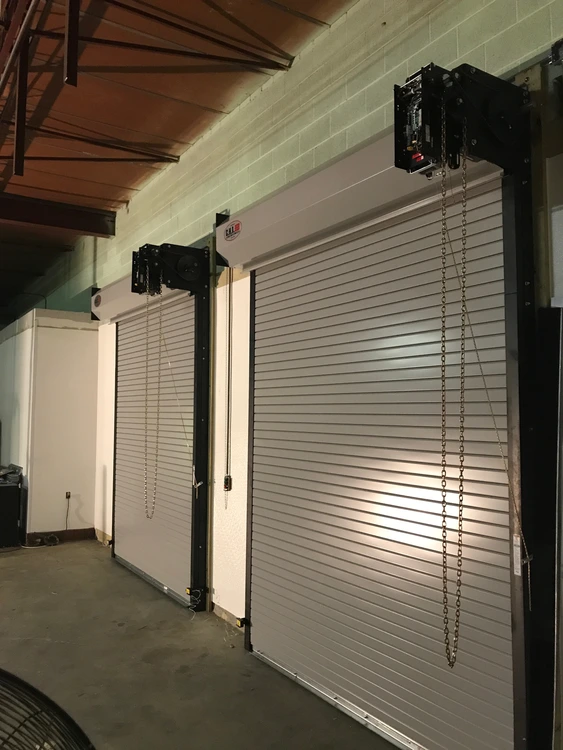
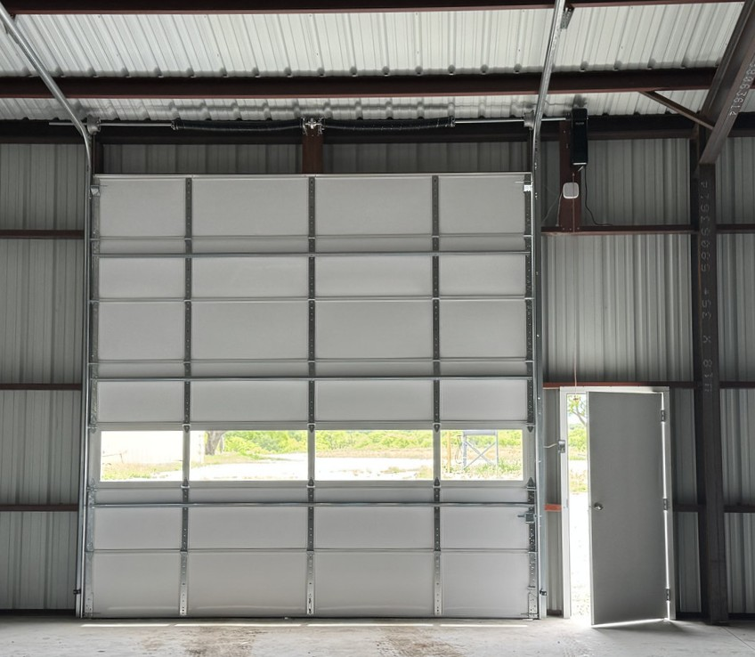
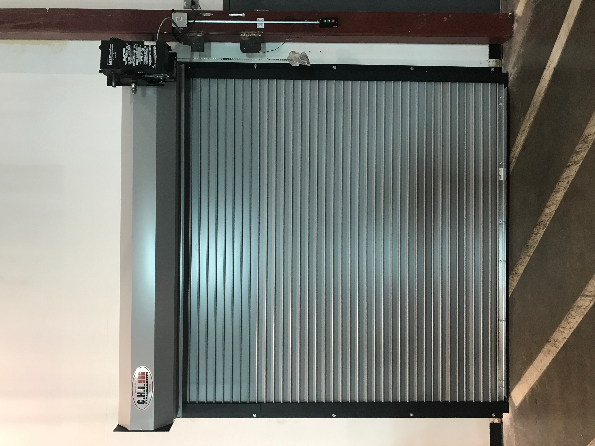
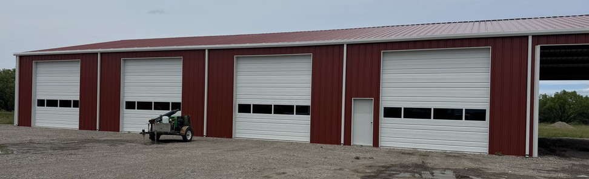
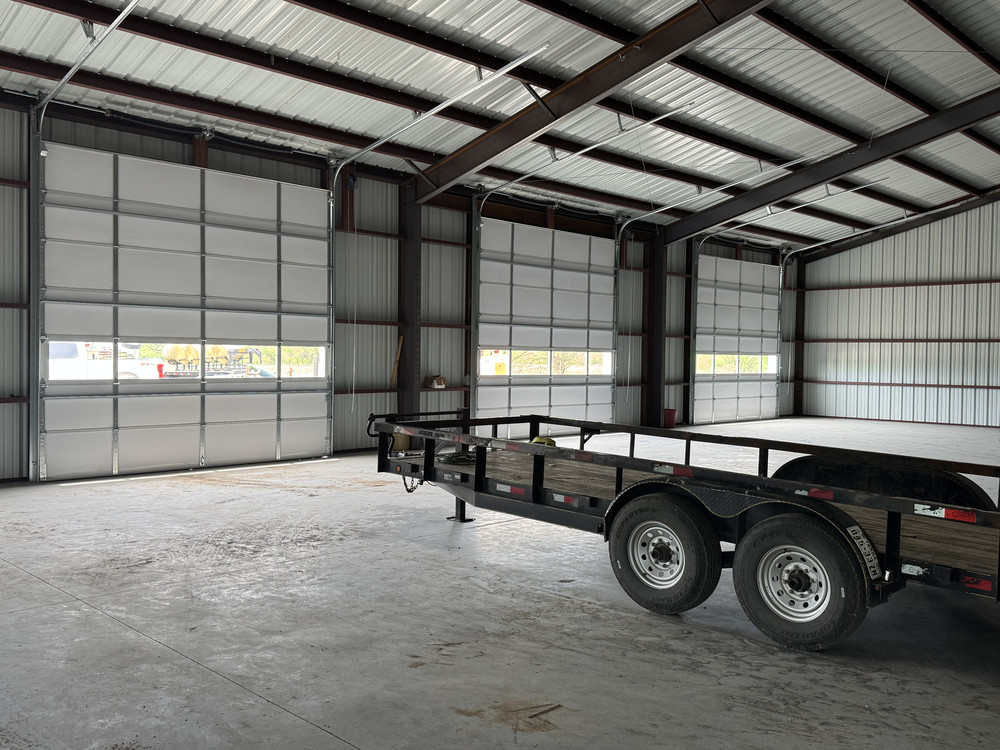

Commercial Door Repair
Troubleshooting and repair for commercial overhead doors that are damaged, stuck, uneven, noisy, misaligned, or not operating correctly.
Commercial Overhead Door Service
David's Overhead Door provides commercial overhead door repair, installation, operator service, troubleshooting, replacement, and maintenance throughout Irving and the Dallas-Fort Worth area.

Commercial Door Services
Commercial overhead doors are critical access points for warehouses, service facilities, shops, loading areas, storage buildings, and other commercial properties. David's Overhead Door provides service for a wide range of commercial door systems and components.
Troubleshooting and repair for commercial overhead doors that are damaged, stuck, uneven, noisy, misaligned, or not operating correctly.
Installation and replacement of commercial overhead doors based on opening conditions, usage, and operating requirements.
Troubleshooting, service, adjustment, replacement, and installation of commercial door operators and related controls.
Service and replacement of damaged, worn, or failed spring and cable components.
Adjustment, repair, and replacement of damaged, worn, bent, or misaligned tracks and rollers.
Inspection, adjustment, lubrication, and general maintenance to help keep commercial overhead door systems operating properly.
Commercial Door Systems
Commercial properties use different door systems based on building design, traffic, security, opening size, frequency of use, and operational requirements.
David has experience working with a variety of overhead door systems and related equipment.


Commercial Door Repair
A malfunctioning commercial overhead door can interrupt access, loading, deliveries, equipment movement, security, and normal business operations.
David's Overhead Door evaluates the door system to help identify the actual cause of the problem before recommending repair or replacement.
Commercial Installation
Commercial overhead doors eventually require replacement due to damage, wear, operational needs, building modifications, or equipment upgrades.
David's Overhead Door can assist with commercial door replacement and installation based on the existing opening and project requirements.


Preventive Maintenance
Commercial doors that operate frequently can experience wear in springs, rollers, tracks, cables, hardware, operators, and other moving components.
Periodic inspection and maintenance can help identify developing problems before they result in larger operational issues.
Multi-Brand Experience
David has experience installing, repairing, and troubleshooting commercial overhead doors, operators, controls, hardware, and related equipment from numerous manufacturers.
That broad experience allows David's Overhead Door to work with many existing commercial door systems without limiting service to a single manufacturer.
Commercial Service Area
David's Overhead Door is based in Irving, Texas and provides mobile commercial overhead door service throughout Dallas-Fort Worth and surrounding communities.
Need Commercial Door Service?
Call or schedule service for commercial overhead door repair, installation, operator service, troubleshooting, replacement, or preventive maintenance.